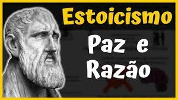

Descubra aqui os mistérios e curiosidades sobre essa metodologia que trabalha a arte de questionar diversos campos que permeiam a nossa sociedade.
Estoicismo
Estoicismo é uma escola e doutrina filosófica surgida na Grécia Antiga, que preza a fidelidade ao conhecimento e o foco em tudo aquilo que pode ser controlado somente pela própria pessoa. Despreza todos os tipos de sentimentos externos, como a paixão e os desejos extremos.
A escola estoica foi criada por Zenão de Cítio, na cidade de Atenas, cerca de 300 a.C., porém a doutrina ficou efetivamente conhecida ao chegar em Roma. O seu tema central defendia que todo o universo seria governado por uma lei natural divina e racional.
Sendo assim, para o ser humano alcançar a verdadeira felicidade, deveria depender apenas da sua “virtude”, ou seja, os seus conhecimentos e valores, abdicando totalmente do “vício”, considerado pelos estoicos um mal absoluto.
O estoicismo também ensina a manter uma mente calma e racional, independente do que aconteça. Ensina que isso ajuda o ser humano a reconhecer e se concentrar naquilo que pode controlar e a não se preocupar e aceitar o que não pode controlar.
A partir desses princípios é possível entender que uma pessoa estoica é aquela que não se deixa levar por crenças, paixões e sentimentos que são capazes de tirar a racionalidade de uma pessoa na hora de agir, como desejos, dor, medo e prazer. Isso porque essas circunstâncias são infundadas e irracionais.
A pessoa estoica busca agir de forma racional, mesmo com a existência desses sentimentos. Não que o estoico seja um indivíduo sem sentimentos, mas ele não é prisioneiro deles.
A filosofia estoica tem o foco na vida prática, nas ações e acontecimentos do cotidiano e em como o ser humano lida com esses acontecimentos de forma racional e prática.
De acordo com o pensamento estoico, há coisas que não estão sob o controle das pessoas e há coisas que são possíveis de serem controladas. Neste caso, sobre o que não é possível controlar, como o clima, por exemplo, não há nada que possa ser feito para alterar o seu estado.
Os ensinamentos da filosofia, como a ataraxia, a autossuficiência, a negação de sentimentos externos e o enfrentamento dos problemas através da razão, têm o objetivo de mostrar que o indivíduo deve se concentrar apenas no que é possível controlar, de ser grato ao que já possui e de negar os prazeres e emoções extremas.
Segundo a filosofia estoica, os acontecimentos que estão fora do seu controle não podem proporcionar a felicidade. A felicidade depende unicamente dos acontecimentos dos quais se pode controlar.

Epicurismo
Epicurismo é uma Escola Filosófica criada por Epicuro de Samos em meados do século IV a.C., no período pós-socrático, que afirma que, para atingir um estado de plena liberdade, tranquilidade e libertação do medo, o indivíduo deve manter-se em busca de prazeres moderados.
A importância da busca por prazeres moderados é ressaltada, pois a partir do momento que os desejos tornam-se exacerbados, eles acabam transformando-se em fontes de descontentamento e perturbação - por isso, dificultam que o indivíduo conheça o estado de liberdade e tranquilidade.
Além da busca por prazeres moderados, outros fundamentos são considerados importantes para os epicuristas. Para atingir a plena tranquilidade, é indicado que o epicurista busque o prazer imediato em cada ação que realiza, sem se perturbar com qualquer tipo de aflições ou angústias terrenas que possam, de alguma forma, levantar algum tipo de preocupação.
Para evitar dores e preocupações, os epicuristas afirmam a necessidade de, sempre que possível, evitar as multidões e os luxos. Além disso, acreditam que devem se aproximar com frequência da natureza, para que, assim, consigam se aproximar da liberdade.
Epicuristas prezam, também, a amizade como uma das maneiras de promover a troca de opiniões que possam levar à busca do prazer. De acordo com Epicuro, a amizade e a gentileza favorecem a busca pelo prazer imediato por todos aqueles que desfrutam dessa relação.
Para os epicuristas, as sociedades mais desenvolvidas e complexas precisam da formulação de regras e leis que só são obedecidas pelos indivíduos quando lhes são, de alguma forma, vantajosas. Por isso, para os seguidores de Epicuro, o Estado só surge a partir dos interesses individuais. A organização política e social não tem grande destaque nas obras do criador do Epicurismo.
Epicuro nasceu na Ilha de Samos, Grécia, provavelmente no ano de 341 a.C. Filho de pais atenienses, interessou-se pela filosofia ainda jovem. Foi enviado pelo pai para Teós, região da Jônia, para que pudesse aprimorar seus estudos filosóficos.
Em Téos, Epicuro conheceu a filosofia atomista, pregada no lugar pelo discípulo de Demócrito de Abdera, Nausífanes. O interesse pela filosofia atomista foi tanto, que Epicuro dedicou-se por alguns anos ao estudo do átomo e, mais tarde, reformulou as teorias atomísticas, apontando os pontos com os quais discordava.
Ao contrário de parte dos filósofos, Epicuro opunha-se à Academia, pois defendia uma filosofia que fosse mais prática. Das obras do autor, mais de trezentos capítulos escritos foram perdidos. O que restou, bem como as suas lições filosóficas, foi espalhado por seu principal discípulo, Lucrécio.
Ainda em vida, Epicuro fundou, em 306 a.C., sua própria escola de filosofia, para ensinar, principalmente, as ideias epicuristas e atomistas. Na escola, chamada o Jardim, Epicuro lecionou até a sua morte, em 270 a.C.
Epicuro teve seu primeiro contato com filosofia a partir dos pensamentos do filósofo atomista Demócrito de Abdera, de quem discordou de algumas teorias e trabalhou para reformulá-las. No entanto, outras influências e conceitos de outras escolas influenciaram Epicuro e a criação do Epicurismo.
A ideia da busca pelo prazer, por exemplo, tem influência direta do Hedonismo, escola filosófica que tem como base a busca pelo prazer para que se possa atingir a verdadeira felicidade.
Por outro lado, as ideias de Epicuro contrastavam com as dos estoicos, que acreditavam que, para atingir a felicidade, liberdade e tranquilidade plenas, os homens deveriam ser unicamente bons - ou seja, que a bondade seria garantia de felicidade. Os estoicos também acreditavam que as instituições eram justas quando contribuíssem para a felicidade do indivíduo. Os epicuristas, ao contrário, negam a existência de justiça absoluta e afirmam a existência de um governo universal regido pela razão.
Cetismo
O ceticismo trata-se de uma corrente filosófica que releva questionamentos sobre ocorrências, opiniões, pensamentos e crenças convencionadas pelo senso comum como verdades. Portanto, essa corrente defende que o indivíduo não pode chegar a nenhuma certeza. Um dos principais nomes desse estudo é o filósofo Pirro de Elis (360 - 275 a.C.).
De acordo com o estudo do ceticismo, essa corrente corresponde à indagação sobre fenômenos que nos rodeiam. O termo é derivado do grego khépsi que quer dizer exame ou investigação. Em síntese, o ceticismo diz respeito ao estado da dúvida.
O ceticismo tem como as aspecto alguns fundamentos como, por exemplo: não é possível fazer juízos sobre os fenômenos (se são reais ou falsos), pode ser realizados questionamentos sobre tudo, não defende dogmas e também não leva em afirmação se um determinado fato é legítimo ou falso.
O ceticismo pode ser classificado em duas formas: exagerado ou moderado. Este trata-se do estado da dúvida com fundamento, ou seja, quando uma pessoa possui dúvidas, mas têm razões para duvidar de uma determinada ação. Esse fator trata-se de um ceticismo moderado.
É considerado também como moderado, a dúvida propagada para chegar-se ao conhecimento. Por exemplo, o filósofo René Descartes desenvolveu escritos sobre esse estado, conhecido como a dúvida cartesiana, trabalho que consiste no ceticismo metodológico.
filósofo René Descartes desenvolveu escritos sobre esse estado, conhecido como a dúvida cartesiana, trabalho que consiste no ceticismo metodológico.
O estudo elaborado por René Descartes resume no seguinte princípio: “tudo o que é duvidoso, seja considerado falso”. Os escritos elaborados por ele foram de grande importância para entender a busca do conhecimento verdadeiro sobre a natureza das coisas.
O ceticismo exagerado, por sua vez, corresponde ao estado da dúvida que quando colocada no cotidiano, atrapalha a vida prática do indivíduo. É exagerado também quando a pessoa dúvida, apenas por duvidar, sem nenhuma razão para esse fato.
O filósofo Pirro de Elis é considerado na história como o precursor do ceticismo. Pirro passou a ter aproximação com a filosofia através das obras desenvolvidas por Demócrito, antes disso sua profissão era pintor.
Pirro nasceu na cidade de Elis e é tratado como o primeiro filósofo dos estudos do ceticismo, apesar de não haver obras dele. Suas ideias são conhecidas através dos escritos de Tímon de Fliunte (360-230 a.C). Pirro foi também o responsável por criar a escola que tem origem do seu nome “pirronismo”.
Pirro teve contato com culturas, costumes e doutrinas, além do misticismo de pensadores da Índia e da Pérsia, durante uma viagem realizada com Alexandre, o grande e com o filósofo Anaxarco. Isso trouxe ao filósofo experiências que influenciaram na forma de pensar. Diante disso, ele manifestou sua postura cética como não saber o que é certo ou errado, bom ou ruim.
Dentro da filosofia de Pirro de Élis há termos como acatalepsia. Essa expressão diz respeito a inviabilidade de compreender as coisas e ainda a impossibilidade de agarra-se a algo como uma verdade absoluta. A palavra nessa corrente filosófica expressa que as coisas não passam de ilusão.
Epoché é um termo grego no qual corresponde ao ato de suspender o julgamento sobre as coisas. Essa expressão remete a ideia de que ao invés de um indivíduo apegar-se a verdade de um fato, ele deve abster-se e não pôr em juízo.
O ceticismo na história tem a aparição na Grécia clássica que teve como um dos primeiros filósofos Pirro de Elis. Além dele também havia Carneades no qual defendeu a impossibilidade da certeza do conhecimento. Havia também Sexto Empírico (200 a.C) que foi um filósofo apresentado como a maior autoridade do ceticismo da Grécia.
Ceticismo x dogmatismo
O ceticismo e o dogmatismo são dois fundamentalismos que são opostos. Ao contrário do que aborda o ceticismo, os dogmáticos não sujeitam suas crenças às críticas ou análises. Portanto, acreditam em fenômenos sem recorrer à veracidade.
Os dogmas estão presentes, por exemplo, nas religiões que podem haver adeptos que não manifestam questionamentos, mas apenas seguem as doutrinas estabelecidas.